More-than-basic things to do and tips for GDK, tinyurl.com/advGDK
Health Data Science sandbox, BiRC, AU
Molecular Biology and Genetics, AU
GenomeDK, Health, AU
2026-11-04
These slides are both a presentation and a small reference manual
In many slides you will be doing things - open your terminals and slides
Official reference documentation: genome.au.dk
Some advanced things require a bit of practice/frustration, but I hope to reduce it
Most important message before starting any workshop: RTFM - Read The Field Manual!. Though
Some manuals can be lousy, but the ones for UNIX tools are usually good
Unusual options might be buried somewhere or badly explained
Practical help:
Samuele (BiRC, MBG) - samuele@birc.au.dk
Drop in hours:
General mail for assistance
support@genome.au.dk
~/.bashrc~/.ssh/config, tmux/screen, port forwarding, VS Codersync file transfer
crontab for scheduled tasksDocumentation you can explore on your own.
An advanced function to download selected folders from github
Setting up ssh keys on github
Web applications on GenomeDK
Batch scripts
Managing multiple terminals on tmux
Set up jupyter notebooks on VScode
Webpage: https://hds-sandbox.github.io/GDKworkshops/
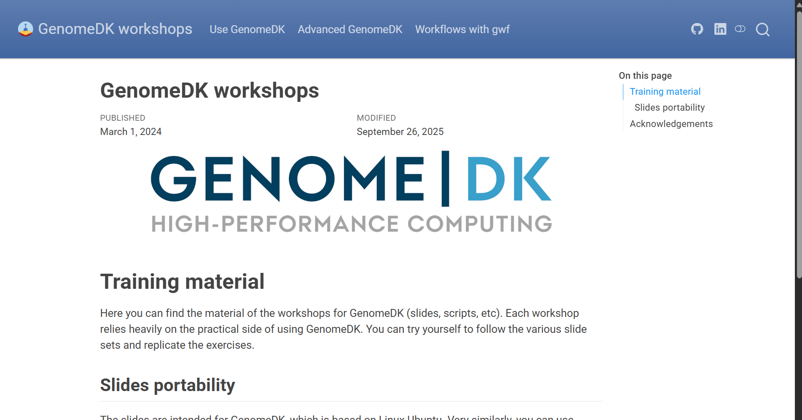
Slides will always be up to date in this webpage
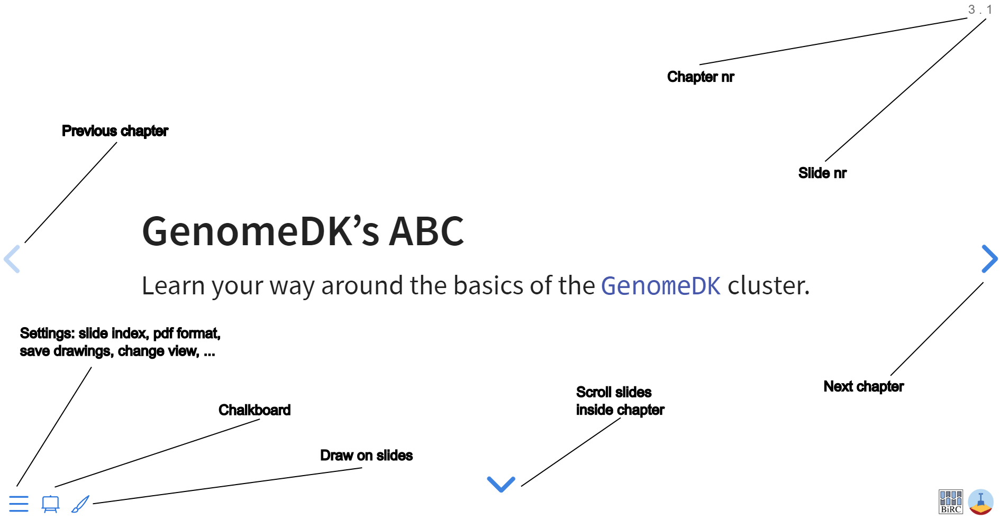
Your ~/.bashrc file contains settings for your user. Those are bash commands which run at every login.
Common practice for many softwares is to have a configuration file in your home, often starting with ., which makes it a hidden file.
Examples:
.emacs for emacs.gitconfig for github.condarc for conda.nanorc for nano editorPlus other things like your command history on the terminal (~/.bash_history) and your settings (~/.bashrc).
Let’s make a useful setting to run at each login. We will need a temporary folder for apptainer containers (more on those later) when downloaded. Default is your home, which will be filled up in no time (folder ~/.apptainer) with cache material.
Edit the file ~/.bashrc (use nano ~/.bashrc or any editor you want). Add those lines:
The -m 700 option for mkdir command ensures also you are the only one which can access the temporary files. Useful is you use a container with password or sensitive info, so no one can access it (/tmp/ is a public folder)!
Warning
Please run this exercise so that we can use some of the aliases and functions in the rest of the workshop.
Now, there are many repetitive things we do every day. For example:
cd into itcd ../ and cd ../../ and … and cd ../../../../../../../and every time it is just annoying to waste precious time. Why not creating some aliases which you can write in their place? Copy the aliases from the list below and add them in your .bashrc file:
You can also create functions including multiple commands: for example making a directory and then cd into it, or opening a terminal in an existing job (more about this later on). Add those to your ~/.bashrc file as well.
Note
These are just inspirations, you can create any alias and function to avoid repetitive/long commands. Wrap all your useful repetitive commands into the ~/.bashrc file!
## make and cd
## make a folder and go into it
mkcd() {
mkdir -p $1; cd $1
echo created $1
}
## interactive job using the same resources of
## an existing job already running
## useful to debug and check resource usage
## example of usage: sshell 12345678
## job id can be found with: squeue --me
sshell() {
srun --jobid $1 --overlap --pty bash
}Now you have done all these changes to your ~/.bashrc file, and you need to apply them. You can either logout and login again, or simply run (just this time)
Exercise finished
This section covers various tools and techniques to make your work on the cluster more efficient and comfortable.
~/.ssh/config: aliases, keystmux and screen: sessions surviving a dropped connection~/.ssh/config: host aliasesThe file ~/.ssh/config on your own computer (on windows C:\Users\YourName\.ssh\config) stores settings for each host you connect to. If you created a key on your computer and copied it to GenomeDK (Introduction workshop), then the file should contain something like this:
Warning
GenomeDK might still ask the 2FA code when logging in with a key
This should also be visible in VSCode Remote-SSH plugin, which uses the same ~/.ssh/config file.
Compute nodes cannot be reached directly from your computer, but you can jump through the login node. Add to ~/.ssh/config:
You can do this directly on VSCode remote plugin, by clicking on the setting wheel of the host and selecting Configure SSH Hosts…. You will be able to open the file ~/.ssh/config and add the lines above.
FIGURE
Warning
You need to have an interactive job (or a job running through slurm) on the compute node before being able to connect to it.
tmux or screenIf your connection drops (wifi, laptop asleep), everything running in your terminal is killed. A terminal multiplexer keeps your session alive on the cluster.
tmux |
screen |
|
|---|---|---|
| new named session | tmux new -s work |
screen -S work |
| detach (leave it running) | Ctrl-b then d |
Ctrl-a then d |
| list sessions | tmux ls |
screen -ls |
| reattach | tmux attach -t work |
screen -r work |
| close | exit inside the session |
exit inside the session |
Warning
hostnamesrun inside the sessionsrun --pty tmux new -s work) and then run your commands thereMore about tmux panes and windows in the Extras.
Jupyter, RStudio server or Streamlit are web servers. You run them on a compute node and see them in your browser through an ssh tunnel.
On GenomeDK, start an interactive job and the server, using your user id as port:
On your computer, open the tunnel (with your numbers):
Open http://localhost:PORT in your browser (for jupyter, use the link including the token).
A full exercise is in the Extras, chapter Web applications, ports, tunneling.
VS Code can open files and terminals on GenomeDK from your computer (setup in the Extras). It uses your ~/.ssh/config, so ssh gdk works there as well.
VS Code can overload the front-end
Remote-SSH starts a server on the front-end that indexes your files and runs extensions for you. With large folders, it slows down the node for everybody. Always open folders you work on, not your whole home or project. If VS Code hangs, kill the server with pkill -u $USER -f vscode-server on the terminal.
connect to a compute node with a running job (the cn-* ProxyJump above) instead of the front-end when you work for long
open only the folder you work on, never your whole home or project
exclude data folders from watching and searching, in the VS Code settings:
if VS Code hangs or leaves processes behind: pkill -u $USER -f vscode-server
rsyncrsyncrsync is a very versatile tool for
Warning
rsync cannot make a transfer between two remote hosts, e.g. running from your PC to transfer data between GenomeDK and Computerome.
Also, rsync cannot download from web URLs
Lots of options you can find in the manual (would require a workshop only for that)
Note
The syntax of rsync is pretty simple:
rsync OPTIONS ORIGIN(s) DESTINATION
An archive (incremental) copy can be done with the options a.
You can add a progress bar with P, and --exclude or --include files of choice.
Log into GenomeDK. Create anywhere you prefere a folder called advancedGDK containing rsync/data
Create 10 files with extensions fastq and log in the data folder
You can in the same way transfer and backup data between your local host (your PC, or GenomeDK) and another remote host (another cluster). You need Linux or Mac on the local host. For example, to get on your computer the same fastq files:
The opposite can be done uploading data from your computer. For example:
Avoid a typical error
To transfer from GenomeDK to your computer, and viceversa, you need to use the commands above from your local computer, and NOT when you are logged into GenomeDK!
Exercise continues for all users in the next slide
Transfer the whole folder data to your computer from GenomeDK. Open a terminal on your laptop and use the correct command from the previous slide!
We want to make a copy on the cluster, only for the files with fastq extension. Run the command
This will copy all the fastq files in data_copy/data. You can check with ls.
Syntax perks
Using data will copy the entire folder, while data/ will copy only its content! This is common to many other UNIX tools.
Exercise finished
crontabcron is a service running on every UNIX machine, which executes commands at scheduled times, also when you are not logged in.
Each user has a crontab (cron table): a text file where each line is a job with its schedule. Typical uses:
rsync backup of results into a BACKUP foldersbatch job (e.g. updating a database every month)Warning
Cron jobs run on the front-end node where you created them. Keep them light: anything heavy must be submitted to the queue with sbatch (see later slides).
Each line has five time fields followed by the command:
# ┌───────── minute (0-59)
# │ ┌─────── hour (0-23)
# │ │ ┌───── day of month (1-31)
# │ │ │ ┌─── month (1-12)
# │ │ │ │ ┌─ day of week (0-7, 0 and 7 are Sunday)
# │ │ │ │ │
* * * * * command to run
| Field value | Meaning | Example |
|---|---|---|
* |
every value | * * * * * every minute |
a,b |
a list | 0 8,16 * * * at 8:00 and 16:00 |
a-b |
a range | 0 9 * * 1-5 at 9:00, Monday to Friday |
*/n |
every n steps | */15 * * * * every 15 minutes |
@daily, @weekly, … |
shortcuts | @weekly is 0 0 * * 0 |
Not sure about your schedule? Test it on crontab.guru.
To choose the editor, use for example EDITOR=nano crontab -e.
Cron is not your terminal
Cron runs commands with a minimal environment: your ~/.bashrc is not read, so aliases, conda/pixi environments and most of your PATH are missing.
bash -l script.sh (a login shell, which loads your settings) or use full paths to programs0 7 * * 1 bash -l ~/scripts/report_usage.sh >> ~/scripts/logs/report_usage.log 2>&1Do not write long commands in the crontab. Keep one script per task in a folder of your home, and let the crontab only call the scripts:
~/scripts/
├── crontab.txt # your crontab, installed with: crontab ~/scripts/crontab.txt
├── logs/ # output of all jobs
├── report_usage.sh # light task: runs on the front-end
└── update_database.sh # heavy task: submitted with sbatch
A trick: #SBATCH lines are just comments for bash. A script with an #SBATCH header can therefore run both on the front-end with bash and on the queue with sbatch, without changes.
~/scripts/report_usage.sh
#!/bin/bash
#SBATCH --account=PROJECT_NAME
#SBATCH --mem=1g
#SBATCH --cores=1
#SBATCH --time=00:30:00
#SBATCH --output=logs/%x-%j.out
# where are we running? SLURM_JOB_ID only exists inside a job
echo "$(date) - running on $(hostname), job: ${SLURM_JOB_ID:-none (front-end)}"
gdk-project-show PROJECT_NAME
gdk-project-usage -p PROJECT_NAME -u
du -sh ~
Both work from the ~/scripts folder:
The crontab then only has short lines. cd into the scripts folder first, so that the relative logs/ paths work:
~/scripts/crontab.txt
# light: weekly usage report every Monday at 7:00, on the front-end
0 7 * * 1 cd ~/scripts && bash -l report_usage.sh >> logs/report_usage.log 2>&1
# heavy: on the 1st of every month at 2:00, submitted to the queue
0 2 1 * * cd ~/scripts && bash -l -c "sbatch update_database.sh" >> logs/cron.log 2>&1Install it with crontab ~/scripts/crontab.txt and check with crontab -l.
Create the scripts folder and a small script writing the date in a file:
Add a job running every minute with crontab -e:
* * * * * cd ~/scripts && bash -l hello.sh >> logs/hello.log 2>&1Wait a couple of minutes, then look at the log and write down the node you are on:
Now remove the job: open crontab -e again and delete the line (do not use crontab -r if you have other jobs!). Check that it is gone:
Warning
Your crontab belongs to the front-end node you were logged into (see hostname). If you log in and crontab -l is empty, you might be on another front-end node: ssh into the one you used to find your jobs again.
Exercise finished
gzip vs bgzip| Location | Quota | Backup | Snapshots |
|---|---|---|---|
/home/<username> |
100 GB | No | Yes |
/faststorage/project/<project> |
none by default | only BACKUP folders |
No |
/tmp/$SLURM_JOB_ID (in jobs) |
node disk | No | No |
gdk-project-set-quota (quotas can only be increased, not decreased)Your home has no dedicated command. Use du and sort the folders by size:
Hidden folders like ~/.conda, ~/.cache and ~/.apptainer are often the culprits!
The project:
Tip
This is exactly what the report_usage.sh script of the crontab chapter does: put it in a weekly cron job and you will notice when someone fills up the project folder.
On GenomeDK, data is shared only through project folders: everyone in the project can access them. The project owner adds members:
Inside a project folder, the usual UNIX permissions decide who can read and write. Look at them with ls -l:
drwxrwx--- 2 samuele myproject 4096 Nov 3 10:00 results
│ │ │ │ │
│ │ │ owner group
│ │ others
│ group
ownerUseful chmod commands on project folders:
Note
The capital X gives the execute permission only to folders (needed to enter them) and to files that are already executable, so you do not make all your data files executable.
By default, nothing is backed up
Only folders called BACKUP, Backup or backup inside project folders are backed up. Your home is not backed up!
backups run weekly and are kept for 14 days. Check when the last ones happened with
moving or renaming backed up files causes a full re-transfer: decide the structure of BACKUP before filling it
put there what you cannot recreate: raw data, scripts, final results. Not intermediate files!
Snapshots are automatic copies of your home folder (not of project folders), taken every
| Interval | Kept |
|---|---|
| 15 minutes | last 4 |
| 1 hour | last 24 |
| 1 day | last 31 |
| 1 week | last 8 |
| 1 month | last 12 |
Deleted a file by mistake? Contact support@genome.au.dk with the full path of the file and approximately when it was still there.
Tip
Snapshots are not a backup. A cron job with rsync from your home into a BACKUP folder of your project is a cheap way to have your scripts backed up as well (see the rsync and crontab chapters).
gzip vs bgzipBoth produce .gz files which zcat and gunzip can read. The difference:
gzip compresses the file as one block: to read line 1 million you have to decompress everything before itbgzip (from htslib) compresses many independent blocks: tools can jump to a region of the file, and it can use multiple cores
gzip |
bgzip |
|
|---|---|---|
Readable with zcat, gunzip |
yes | yes |
Random access with an index (tabix, samtools faidx) |
no | yes |
| Multithreaded | no (use pigz) |
yes (-@) |
| Installed by default | yes | no, via htslib (conda/pixi) |
Rule of thumb
Use bgzip for VCF, BED, GFF and FASTA files you want to index and query. gzip is fine for FASTQ files and archives you only read from start to end.
What is a container
Container = Standalone and portable software package including
Deployment of a container on different HPCs and PCs is reproducible. A virtual environment (conda, mamba, pixi, cargo, npm, …) depends instead on the host system and is not necessarily fully reproducible on two different computer hardwares.
A virtual environment isolates dependencies for a specific programming language within the same operating system. It does not include the operating system or system-level dependencies, so it depends on the hosting system.
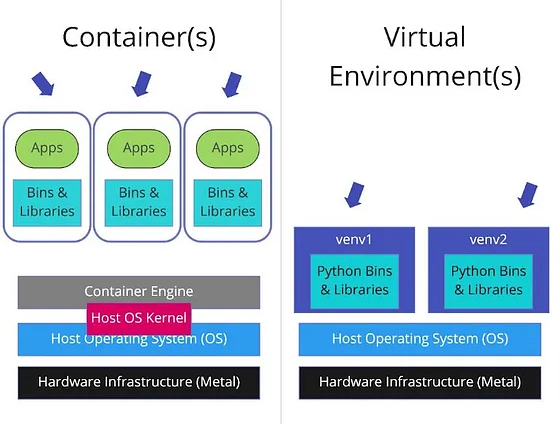
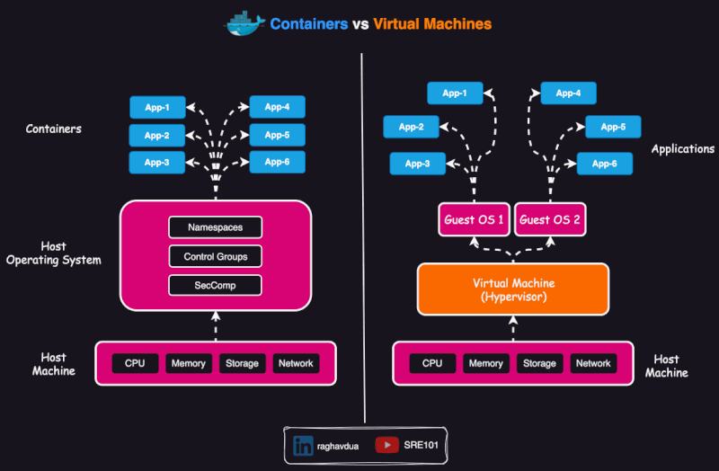
Containers are usually thought as packing a specific application which can run anywhere (or, which is portable).
E.g. annoying bioinformatics software requiring specific libraries or long installations.
Many containers are done with Docker, but this is not installed on GenomeDK
GenomeDK has Apptainer, which can also run programs installed in Docker containers.
Very practical to pull and use containers in workflows.
Typical repositories with pre-built containers are:
Biocontainers: community-driven initiative to containerize bioinf softwares.
DockerHub registry: Public hub for Docker images, often including official containers from software developers
Quay: Same philosophy of DockerHub.
Once you find a container on the websites, simply use (eventually adapt) the provided code to pull it locally.
We use biocontainers to pull containers and recreate a little bulkRNA alignment.
Make a folder called containers101 in the advancedGDK directory.
Find a bash bioinformatics software you know on the Biocontainer Registry and open it to see a detailed description - if you have no good ideas look for the minimap2 aligner. You should see a software documentation illustrating how to run the software in various ways - see next slide for a screenshot.
minimap2 splice-aware aligner. Click on the image to enlarge.The page will suggest to run immediately the container with apptainer. I would suggest downloading it first (pull instead of run) and then running it.
In the case of minimap2:
which creates a container file in your current directory, and calls it minimap2.sif (better name than the default minimap2:2.28--h577a1d6_4).
You can either run the container, which opens a CLI into it, where you can execute the program. A non-interactive way (useful for pipelines) is to write the command directly. For example:
You can also pull and run a container from DockerHub. For example, for the biocontainers/bwa-mem2 container you will need to adapt the command a bit, because it is not a singularity container.
Note
The correct path docker://biocontainers/samtools:v1.9-4-deb_cv1 can be found on the DockerHub page of the container. Here is the https://hub.docker.com/r/biocontainers/samtools.
Doing operations with a container is really easy For example, you can run a command inside the container like the following, which outputs a .bam genome file read from a URL:
Exercise finished
If you want to build containers with Docker, you need to
Note
A batch job is used to run a program non-interactively, usually for longer time and so without interaction from the user. A batch job is described in a batch script that contains
and
Prepare the data needed for the exercise. Create a subfolder called batchGDK in the advancedGDK folder:
Download the data needed for the exercise:
wget https://github.com/hartwigmedical/testdata/raw/master/100k_reads_hiseq/TESTX/TESTX_H7YRLADXX_S1_L001_R1_001.fastq.gz \
-O ./data.fastq.gz
wget https://github.com/hartwigmedical/testdata/raw/master/100k_reads_hiseq/TESTX/TESTX_H7YRLADXX_S1_L001_R2_001.fastq.gz \
-O ./data2.fastq.gz
wget https://github.com/hartwigmedical/testdata/raw/master/100k_reads_hiseq/TESTX/TESTX_H7YRLADXX_S1_L002_R1_001.fastq.gz \
-O ./data3.fastq.gz
wget https://github.com/hartwigmedical/testdata/raw/master/100k_reads_hiseq/TESTX/TESTX_H7YRLADXX_S1_L002_R2_001.fastq.gz \
-O ./data4.fastq.gz
gunzip data*.fastq.gz
wget http://genomedata.org/rnaseq-tutorial/fasta/GRCh38/chr22_with_ERCC92.fa -O ref.fastaCreate a conda or pixi environment with bwa-mem2 and samtools installed. For example
Create a text file called align.sh. This contains a batch script with resources desired and the commands to run on those. The script text depends on you having used conda or pixi to create the environment.
#!/bin/bash
#SBATCH --account PROJECT_NAME
#SBATCH --cpus-per-task=4
#SBATCH --mem 16g
#SBATCH --time 04:00:00
#initialize conda
source ~/miniconda3/etc/profile.d/conda.sh
#activate Environment
conda activate batchGDK
#index reference
bwa-mem2 index ref.fasta
#align data
bwa-mem2 mem -t 4 ref.fasta \
data.fastq \
| samtools sort \
-@ 3 \
-n \
-O BAM \
> data.bam
exit 0Send the script to the queueing system using the terminal:
It will provide a job id number, e.g. 33735298, on the terminal. You will need it to check the job status. For example
Interrogate SLURM about the specific job with the provided number. For example
>Name : align.sh
>User : samuele
>Account : my_project
>Partition : short
>Nodes : s21n43
>Cores : 4
>GPUs : 0
>State : RUNNING
>...or about all the queued jobs
>JOBID PARTITION NAME USER ST TIME NODES NODELIST(REASON)
>33735928 short align.sh samuele R 1:12 1 s21n43
Now run the same type of operation on multiple files in parallel using a job array.
Create folders for results and logs. Then generate a list with the FASTQ files:
Create a script called align_array.sh.
#!/bin/bash
#SBATCH --account PROJECT_NAME
#SBATCH --cpus-per-task=2
#SBATCH --mem=8g
#SBATCH --time=01:00:00
#SBATCH --array=1-4%2
#SBATCH --job-name=alignArray
#SBATCH --output=logs/align_%A_%a.out
#SBATCH --error=logs/align_%A_%a.err
set -euo pipefail
source ~/miniconda3/etc/profile.d/conda.sh
conda activate batchGDK
mapfile -t fastqs < fastq_list.txt
fq="${fastqs[$((SLURM_ARRAY_TASK_ID-1))]}"
sample=$(basename "$fq" .fastq)
bwa-mem2 mem -t "$SLURM_CPUS_PER_TASK" ref.fasta "$fq" \
| samtools sort -@ 1 -O BAM \
> "results/${sample}.bam"
exit 0#!/bin/bash
#SBATCH --account PROJECT_NAME
#SBATCH --cpus-per-task=2
#SBATCH --mem=8g
#SBATCH --time=01:00:00
#SBATCH --array=1-4%2
#SBATCH --job-name=alignArray
#SBATCH --output=logs/align_%A_%a.out
#SBATCH --error=logs/align_%A_%a.err
set -euo pipefail
mapfile -t fastqs < fastq_list.txt
fq="${fastqs[$((SLURM_ARRAY_TASK_ID-1))]}"
sample=$(basename "$fq" .fastq)
pixi run bwa-mem2 mem -t "$SLURM_CPUS_PER_TASK" ref.fasta "$fq" \
| pixi run samtools sort -@ 1 -O BAM \
> "results/${sample}.bam"
exit 0Submit and monitor the array job:
Check that outputs and logs are separated by array task id (%a) and parent job id (%A):
What is happening
With --array=1-4%2, SLURM creates 4 tasks and runs at most 2 concurrently.
Each task gets its own SLURM_ARRAY_TASK_ID, used to pick one input file from fastq_list.txt.
Exercise finished
Now run a 3-step pipeline where indexing starts only if alignment succeeds.
Create a second script called index_array.sh:
#!/bin/bash
#SBATCH --account PROJECT_NAME
#SBATCH --cpus-per-task=1
#SBATCH --mem=4g
#SBATCH --time=00:30:00
#SBATCH --array=1-4
#SBATCH --job-name=indexArray
#SBATCH --output=logs/index_%A_%a.out
#SBATCH --error=logs/index_%A_%a.err
set -euo pipefail
source ~/miniconda3/etc/profile.d/conda.sh
conda activate batchGDK
mapfile -t bams=(results/*.bam)
bam="${bams[$((SLURM_ARRAY_TASK_ID-1))]}"
samtools index "$bam"
exit 0#!/bin/bash
#SBATCH --account PROJECT_NAME
#SBATCH --cpus-per-task=1
#SBATCH --mem=4g
#SBATCH --time=00:30:00
#SBATCH --array=1-4
#SBATCH --job-name=indexArray
#SBATCH --output=logs/index_%A_%a.out
#SBATCH --error=logs/index_%A_%a.err
set -euo pipefail
bams=(results/*.bam)
bam="${bams[$((SLURM_ARRAY_TASK_ID-1))]}"
pixi run samtools index "$bam"
exit 0Create a final reporting job called report_job.sh:
#!/bin/bash
#SBATCH --account PROJECT_NAME
#SBATCH --cpus-per-task=1
#SBATCH --mem=1g
#SBATCH --time=00:10:00
#SBATCH --job-name=arrayReport
#SBATCH --output=logs/report_%j.out
set -euo pipefail
echo "BAM files" > results/summary.txt
ls -1 results/*.bam >> results/summary.txt
echo "" >> results/summary.txt
echo "BAI files" >> results/summary.txt
ls -1 results/*.bam.bai >> results/summary.txt
exit 0Submit with dependencies:
ALIGN_ID=$(sbatch --parsable align_array.sh)
INDEX_ID=$(sbatch --parsable --dependency=afterok:${ALIGN_ID} index_array.sh)
REPORT_ID=$(sbatch --parsable --dependency=afterok:${INDEX_ID} report_job.sh)
echo "ALIGN=${ALIGN_ID} INDEX=${INDEX_ID} REPORT=${REPORT_ID}"
squeue --me -n alignArray,indexArray,arrayReport
Check the final report:
What is happening
--dependency=afterok:<jobid> means the next job starts only if the previous job exits successfully.
If a parent job fails, dependent jobs stay pending and are marked as unsatisfied dependency.
Exercise finished
Try to run a job with a smaller dataset as a test, or with the whole data if it does not need too much time loading-opening it. Run only one of many jobs of the same type if they are in parallel. While the job is running
use squeue --me and look at the job id
log into the job from the front-end terminal using an interactive session and your job id:
Warning
top or htop -u <username> or btop to see what is running and how much memory and CPU it uses 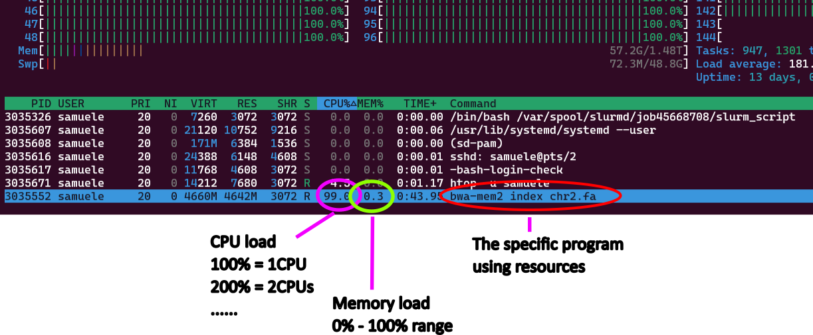
Exercise finished
slurm-<jobid>.out for any error or warning.
Please fill out this form :)
A lot of things we could not cover
use the official documentation!
ask for help, use drop in hours (ABC focus group)
try out stuff and google yourself out of small problems
Slides updated over time, use as a reference
Next workshop all about pipelines
Things that are more advanced or are not treated in the workshop, but you might find useful.
Extras start from the next chapter of the slides.
Github is a web-based platform for version control and collaboration, built around the Git tool. You can get an account for free at github.com.
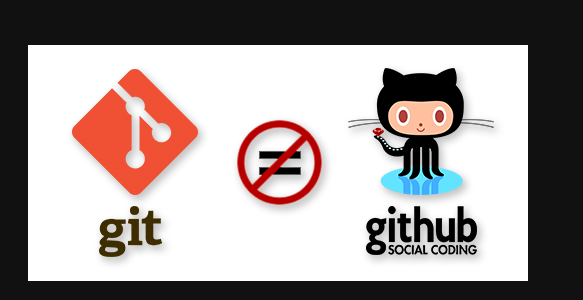
Git is a software for version management of your files. Github is a web service based on git that allows to manage file versions and collaborate on projects.
When you use Github on GenomeDK, you can configure your ssh keys to avoid writing your name and password every time you push or pull changes.
Note
using ssh keys is useful mainly when you work on your own repositories. For public repositories, it is always possible to pull without the authentication we show in these slides.
git is already installed on GenomeDK, so you can use it right away.
On the cluster run the following command to create a new ssh key. Use your github email address in place of GithubAccountMail@example.com.
When asked, you can choose to name the file. Call it ~/.ssh/id_ed25519_github. When asked for password, you can leave it empty (press enter).
Warning
Note that the key must be saved in the folder ~/.ssh/. This is the usual place where ssh looks for keys on Linux.
Add the key to the ssh agent, which manages your keys. Write the following on your ~/.bashrc file using a text editor:
Now print your public key on the terminal. Copy the command’s output because you need to paste it on the github website:
Note
The key looks like this ssh-ed25519 ABCSC3Nza.....tDUFLn GithubAccountMail@example.com. You must copy all of it including ssh-ed25519 at the beginning and your email address at the end.
Go on github.com and login. Go to Settings, SSH and GPG keys, New SSH key. Paste the public key you just copied and give it a name recalling it is for usage with GenomeDK.
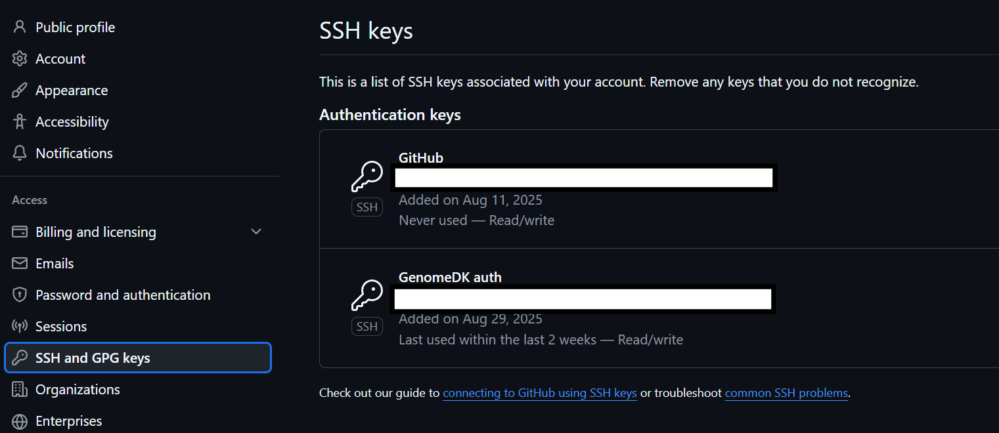
Now, test your connection to github. First apply the changes from the ~/.bashrc file.
You should see a welcome message. From now on pull and push will work without asking for your username and password.
Here a more advanced bash function you can paste into your ~/.bashrc file. Why not making one for git clone downloading only the latest commit history and choosing specific folders for the repository?
# Git clone with depth 1 and choice of folders
# arg 1: username/repository
# arg 2: folders and files in quotes '', backspace separator
# arg 3: local download folder name (optional, default:repo)
# arg 4: branch (optional, default:main)
# Examples:
# ghdir github/gitignore 'community Global' test01 main
# ghdir github/gitignore 'community Global'
ghdir() {
echo Downloading from $1 in folder $3
echo Selecting $2
if [ -z "$4" ]; then
BRANCH="-b main"
else
BRANCH="-b $4"
fi
git clone --no-checkout $BRANCH --filter=blob:none --depth 1 https://github.com/$1.git $3
if [ -z "$3" ]; then
folder=$(echo "$1" | cut -d'/' -f2)
cd "$folder"
else
cd "$3"
fi
git sparse-checkout init --cone
git sparse-checkout set $2
git checkout
}tmuxtmux is a server application managing multiple terminal sessions. It can
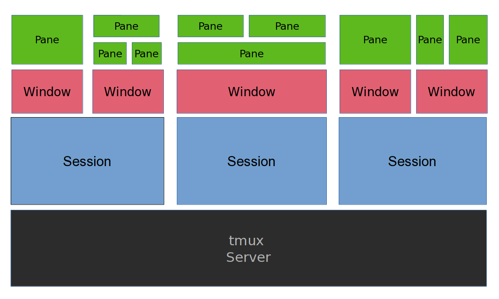
tmux is a keyboard-only software. But you can set it up also to change windows and panes with the mouse. Simply run this command (only once) to enable mouse usage:
Warning
Using the mouse can create problems in some terminal programs, where copy-paste starts acting weird, e.g. on Mac computers and on Windows’ Moba XTerm software. In case you have a bad experience, remove the mouse setup from the file ~/.tmux.conf
You can start a tmux session anywhere. It is easier to navigate sessions giving them a name. For example start a session called example1:
The command will set you into the session automatically. The window looks something like below:
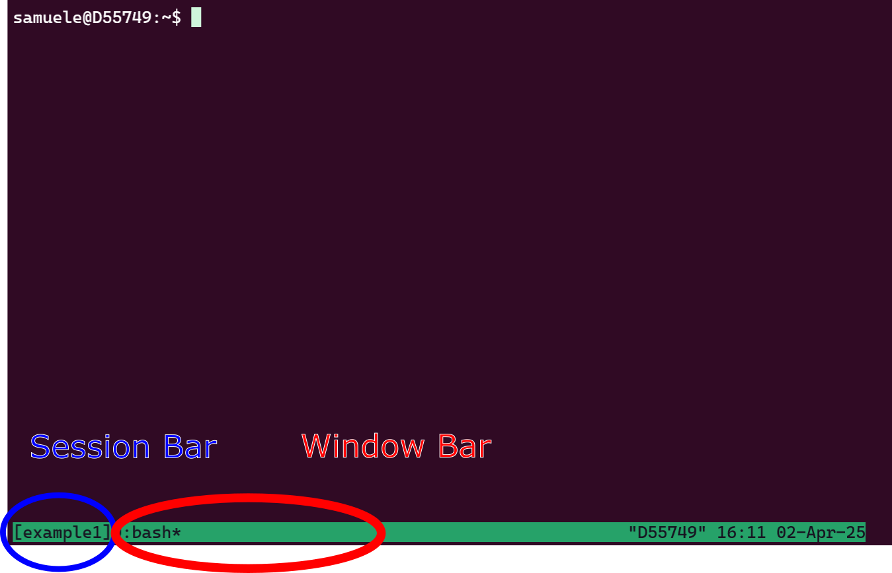
Now, you are in session example1 and have one window, which you are using now. You can split the window in multiple terminals. Try both those combinations of buttons:
Ctrl + b %
Ctrl + b ""
Or keep right-clicked with the mouse to choose the split.
Do split the window horizontally and vertically, running 3 terminals. You can select any of them with the mouse (left-click).
Try to select a window and resize it: while keeping Ctrl + b pressed, use the arrows to change the size
Now, you have your three panes running in a window.
Create a new window with Ctrl + b c. Or keep right-clicked on the window bar and create a new window.
You should see another window added in the bottom window bar. Again, switch between windows with your mouse (left-click!)
In the new window, let’s look at which tmux sessions and windows are open. Run
The output will tell you that session example1 is in use (attached) and has 2 windows. Something like this:
example1: 2 windows (created Wed Apr 2 16:12:54 2025) (attached)Start a new session without attaching to it (d option), and call it downloads:
verify the session is there with tmux ls.
Warning
If you want a new session attaching to it, you need to detach from the current session with Ctrl + b + d.
Create a text file with few example files for this workshop to be downloaded.
Now, the script below launches all the URLs from the list in the download session in a new window. The new window closes after the download. If there are less than K downloads active, a new one starts, until the end! You can use this and close your terminal. The downloads will keep going and the window names will be shown to keep an eye on the current downloads. Try it out and use it whenever you have massive number of file downloads.
mkdir -p downloaded
K=2 # Maximum number of concurrent downloads
while read -r url; do
# Wait until the number of active tmux windows in the "downloads" session is less than K
while [ "$(tmux list-windows -t downloads | wc -l)" -ge "$((K+1))" ]; do
sleep 1
done
# Extract the filename from the URL
filename=$(basename "$url")
# Start a new tmux window for the download
tmux new-window -t downloads -n "$filename" "wget -c $url -O downloaded/$filename && tmux kill-window"
tmux list-windows -t downloads -F "#{window_name}"
done < downloads.txtWhy do we use web applications for graphical interfaces?
A web application on GenomeDK:
The local user:
ssh connection mapping to the remote port used by the server process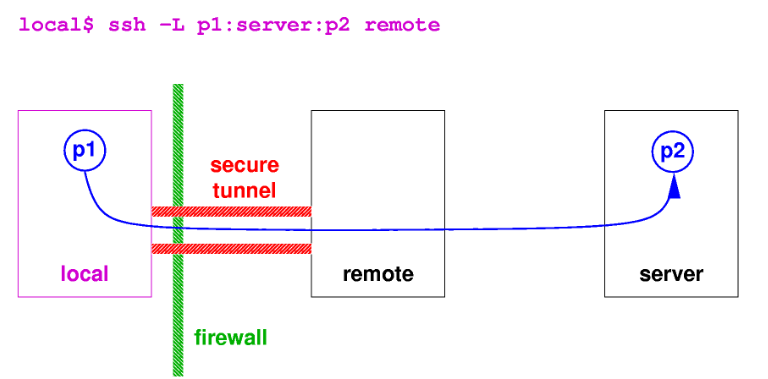
How the port forwarding looks like from the local user (your pc) to the remote node of the cluster. The purple command has to be launched on the local computer, once the server is running on the remote host. Source: KU Leuven.
Each server process on a machine needs a unique port (p2 on previous figure) to avoid conflicts.
Ports are in common between users on GenomeDK. So you can only use the port corresponding to your user number, which you can see with
echo $UID
You will see all this in the next exercise
better safe than sorry
Launch a web application which has tokens (a random code in the URL for the browser) or a password you can setup. In theory, anyone on your same node of the cluster can get into your server process and see your program and data!
If you DO NOT have the conda package manager, you can quickly install it from the box below, otherwise move to the next slide!
Install conda
Run the installation script to install the software. There are some informative messages during the installation. You might need to say yes a few times
When you are done, you need a little bit of configuration. You can run the following command to configure conda (run them only once, they are not needed again):
Now you are ready to move on!
Create a new conda environment:
Start a job with just a few resources.
Now activate your environment and run jupyterlab. The node name (remote host) and your user ID (for the port number) are given as variables to the web server simply using $(hostname) and $UID:
You will see some messages and recognize an address with: your node and your user ID. Below it, the URL you can use in your browser, which always starts with the node name. It will look like this, but in your case it might have a longer URL with a random token (mine is instead password protected):
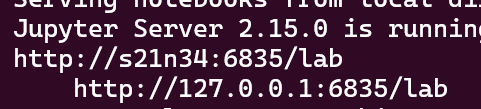
Write down your node number and user id you got from jupyterlab.
We now need a tunnel from the local host (your PC)! Write in a new terminal (not logged into GenomeDK) a command like the following (matching the example figure above), substituting the correct values:
Your tunnel is now opened. The web application can be accessed from your browser at the address given by the server process on GenomeDK, which starts with 127.0.0.1/PORT_NUMBER (put your correct port number). Copy and paste it in your browser.
Exercise finished
Tip
The same logic applies to all other web applications. They will have similar options to define the remote node and port.
Usually the host node option changes name between ip, host, address, or hostname.
Note also that you will always have to use the address 127.0.0.1/PORT_NUMBER on your browser when you do the tunneling. Instead you will need to use the address with the node name if you are using the virtual desktop on GenomeDK.
Our suggestion is to always use a terminal in the Virtual Desktop to run jupyterlab. It will not need any tunneling and open the correct address automatically in the browser (inside the Virtual Desktop).
Visual Studio Code (VScode) is a popular IDE (Integrated Development Environment), an interface from which you can edit files, use the terminal, write code. From VScode you can also control your jupyter notebooks when you run jupyterlab on a computing node on GenomeDK - and even access the available kernels to run code!
Warning
We do not suggest using VScode to log into GenomeDK and run commands. This is because it runs a lot of processes in the background, which can be a problem on the shared front end node. Use it only to connect to jupyterlab.
Download VSCode and open it. Go to the plugin tab (red circle)
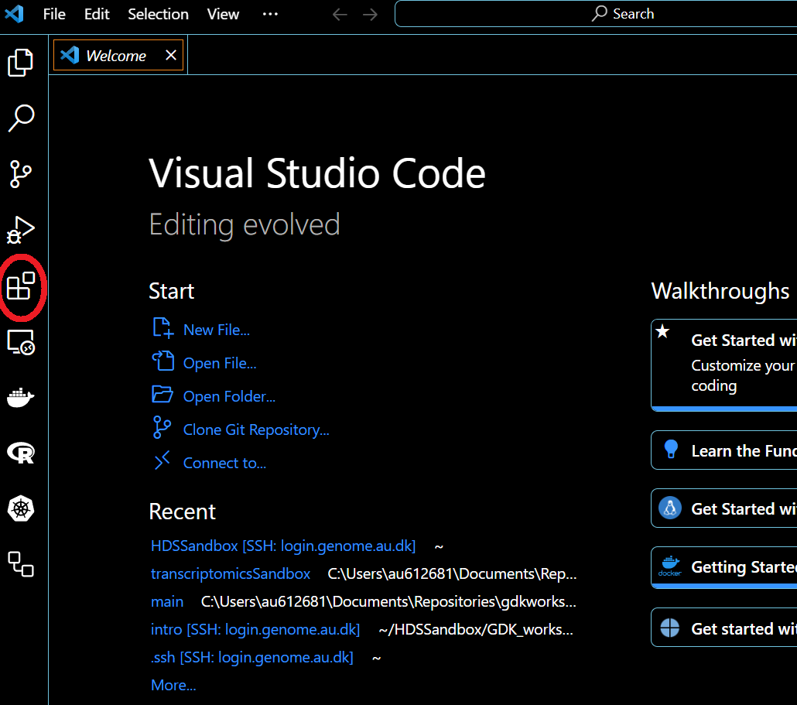
Search for remote development. Open the plugin (red circle) and install
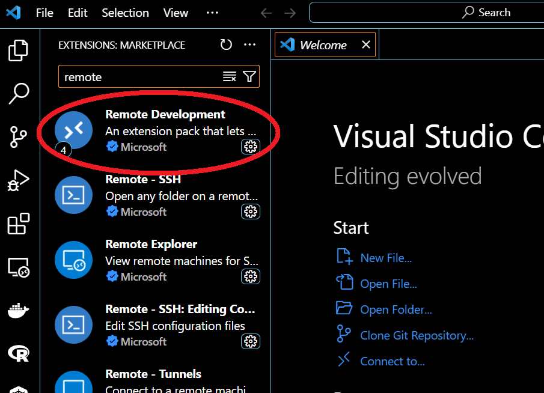
When done, click on the remote symbol on the bottom-left corner (red circle),
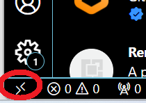
choose Connect current window to host then Add new SSH host, and type:
If asked, select the file .ssh/config.
After some waiting for the first installation, you are logged in. Now the access configuration is done and we need only to configure a tunnel to jupyterlab through one of the computing nodes.
Warning
If the login is stuck, click on details when there is a message on the bottom right corner of VScode. That shows a terminal where you are likely asked the 2-factor authentication code!
Now close VScode and reopen it. Open the Remote Explorer (from the toolbar on the left). There you should now see login.genome.au.dk as configured remote. Click on the little option symbol close to the SSH menu. The option symbol is given by the little clogwheel icon (red circle).
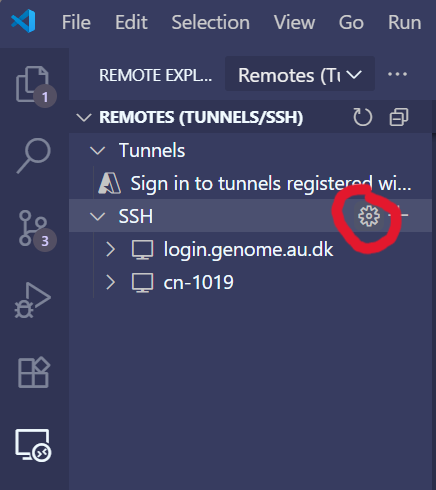
This should open the configuration file for ssh access, in which you already have some settings. Eventually, you are asked to choose which file to open, and it is usually the first one of the list. Now, the file should contain a configuration like the one below.
Now, add an additional configuration in the file which looks like below, where
A_COMPUTING_NODE is the name of the computing node you want to useecho $UID on GenomeDK)Save the file and close. Your Remote explorer has now an additional SSH connection with the chosen node name. For example in figure below I have cn-1019.
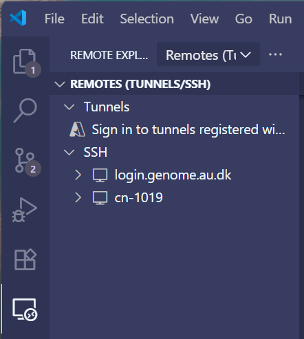
Now, on the cluster you can run a job on that node so that you can run jupyterlab. To chose the node in an interactive job, use the option --nodelist. For example:
Remember to run jupyterlab on the node with your user id as port and the node name as ip/hostname:
You then open VScode, connect on the node from the remote explorer, and use the file browser of VScode to open your notebooks. When the notebook is open, you can also choose all the jupyter kernels related to your conda or pixi environment where you have jupyterlab installed!
Warning
Remember to close the job once you are done working on VScode - the job will be kept open on the cluster until you close it!